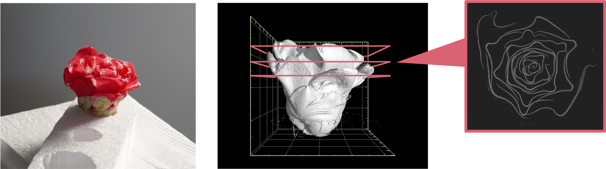
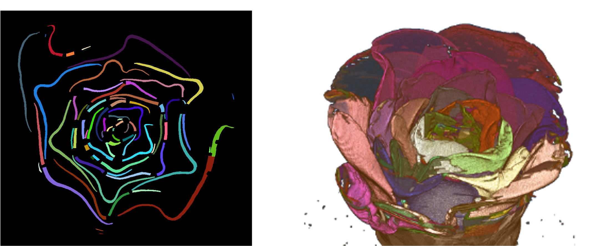

花の3次元形状推定のためのCT画像を用いた花弁セグメンテーション
研究の概要
花は複雑な構造をしていることが多いため、器官と器官の相互作用が花の形態形成に重要になります。花器官の中でも花弁（花びら）は大きさや形、色などが花の種類によって大きく異なることから花器官形成の過程を解明することに適しています。そのため、花弁を中心とした花の形態情報を収集し、花の形態形成の仕組みを明らかにすることが期待されています。
近年では花の形態情報収集の1つとして、CT装置で花を撮影する方法が行われています。そのCTで撮影された花から3次元的な花弁の形態情報を得るためには、CT画像の解析による各花弁の詳細なセグメンテーションが必要となります。しかし、手作業でのセグメンテーションは大変な労力を要します。
そこで私の研究では、得られた花のCT画像から花弁1枚1枚のセグメンテーションを自動で行う手法の研究を行っています。この研究の問題点として、花のラベル付きデータが少ないことが挙げられ、大量の学習データによる深層学習ベースの手法を用いることが困難です。そのため、教師なし機械学習であるスペクトラルクラスタリングを用いることで、手作業、学習を必要としない自動的な花弁セグメンテーション手法の研究に取り組んでいます。
研究・技術の現状
関連研究
研究の現状と課題
花のCT画像において、花弁が接触している部分というのは画素の輝度値の変化が非常に少ないので、全体を一度にセグメンテーションすることは難しいです。そのため。花弁が接触している部分とそれ以外の部分を分けてセグメンテーションを行っており、現在は接触部分以外のセグメンテーションが可能となっています。花弁同士の接触部分のセグメンテーションが現在の課題です。
今後の展望・その研究にどんな夢があるのか
この研究によって、CT画像の解析の手間が省け、植物学者の負担軽減につながります。また、詳細なセグメンテーションにより今まで発見できなかった形態情報が得られる可能性もあります。
補足（スペクトラルクラスタリング）
スペクトラルクラスタリングはグラフ構造をしたデータから、リンクが密になっている連結部分グラフを1つのクラスタとし、リンクがない、もしくは疎な部分を別のクラスタとしてグラフを分割することでクラスタ分割を行うクラスタリング手法です。
本研究では花のCT画像の前景画素をノードとして扱い、それらの前景画素の類似度を計算し類似度行列を作成します。この類似度行列から正規化ラプラシアン行列を計算し、この行列の最小固有値からクラスタ数k個分の固有値に対応する固有ベクトルを計算します。これで得られた固有ベクトルを特徴量とし、k-means法によりk個のクラスタにクラスタリングを行います。
スペクトラルクラスタリングについては、以下のサイトが参考になります。
参考文献
- Takashi Ijiri, Shin Yoshizawa, Hideo Yokota, and Takeo Igarashi. Flower Modeling via X-ray Computed Tomography. ACM Transactions on Graphics (TOG), Vol. 33, pp. 1 – 10, 2014.
- Han Yang, Xingjian Zhen, Ying Chi, Lei Zhang, and Xian-Sheng Hua. CPR-GCN: Conditional Partial-Residual Graph Convolutional Network in Automated Anatomical Labeling of Coronary Arteries. In Proceedings of the IEEE/CVF Conference on Computer Vision and Pattern Recognition (CVPR), pp. 3803–3811, 2020.
- Yuyin Zhou, Zhe Li, Song Bai, Chong Wang, Xinlei Chen, Mei Han, Elliot Fishman, and Alan L. Yuille. Prior-aware neural network for partially-supervised multi-organ segmentation. In Proceedings of the IEEE/CVF International Conference on Computer Vision (ICCV), pp. 10672–10681, 2019.
- Zhiming Cui, Changjian Li, and Wenping Wang. Toothnet: Automatic Tooth Instance Segmentation and Identification From Cone Beam CT Images. In Proceedings of the IEEE/CVF Conference on Computer Vision and Pattern Recognition (CVPR), pp. 6368–6377, 2019.
関連サイト